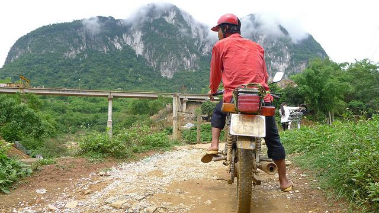
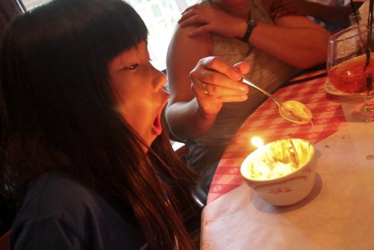
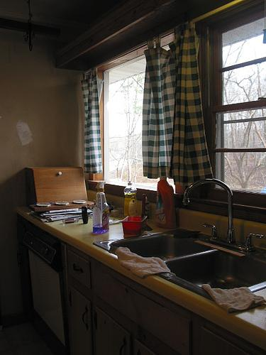

Image-grounded question
Start from an observable detail in the image, such as an object, attribute, count, scene, or action.
Multimodal dialogue benchmark
A vision-language dataset for probing how hallucinated assumptions accumulate, propagate, and can be corrected across multi-turn image-grounded dialogue.



Each sample pairs an image with a caption and a structured multi-turn dialogue. The dialogue contrasts grounded answers with hallucinated responses so models can be evaluated beyond single-turn recognition.
Start from an observable detail in the image, such as an object, attribute, count, scene, or action.
Record a correct answer and a hallucinated answer to expose where visual grounding can fail.
Continue the dialogue to test whether a model corrects false premises or compounds them over time.
A single false assumption can shift later questions away from the visual evidence. MM-Snowball keeps both the grounded and hallucinated paths explicit.
What is the person in the image riding?
The person is riding a moped.
The person is riding a bicycle, which can then become a false premise in later turns.
Replace the placeholder metadata after the paper title, author list, and venue are finalized.
@inproceedings{jiang2026mm,
title={MM-Snowball: Evaluating and Mitigating Hallucination Snowballing in Multimodal Multi-turn Dialogue},
author={Jiang, Yue and Jiang, Xue and Zhang, Lihua and Wang, Zhiqiang and Lu, Yuhang and Wang, Peng and Han, Bo and Zheng, Feng and Yang, Dingkang},
booktitle={ICML},
year={2026}
}